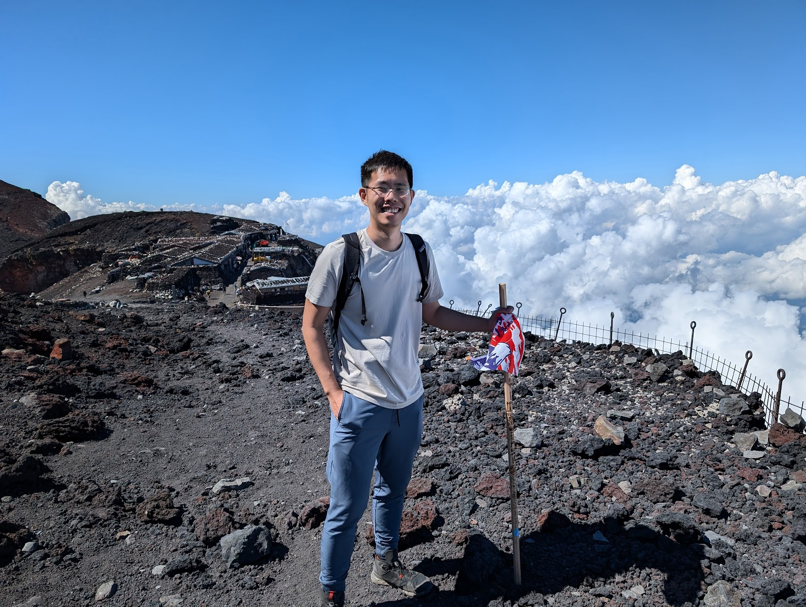

Kenji Hata
Member of the Technical Staff, OpenAIa (dot) kenjihata [at] gmail (dot) com


About Me
I work at OpenAI as a researcher on image generation. I have been a key contributor to:
- 4o image generation, also known as GPT-Image-1
- Sora 2
- GPT-Image-1.5
- o3 and o4-mini
- Thinking with images
Previously, I worked on computer vision in Google Research and studied at the Stanford Vision Lab.
Education
M.S. with distinction in research in Computer Science, Stanford University, 2015 - 2017
B.S. with distinction in Computer Science, Stanford University, 2011 - 2015